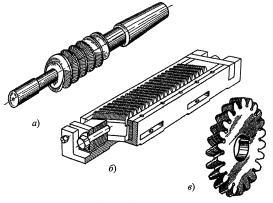
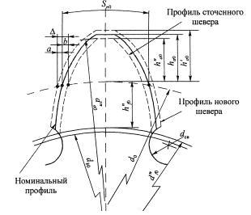
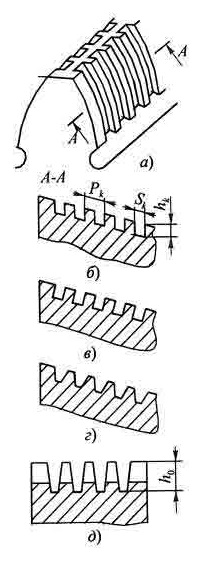

Это инструменты высокой точности, предназначенные для чистовой обработки зубчатых колес. Процесс шевингования заключается в том, что при сцеплении инструмента с обрабатываемым колесом из-за несовпадения углов наклона зубьев у шевера и колеса при взаимном обкате происходит их скольжение. На боковых сторонах зубьев шеверов имеются стружечные канавки, которые образуют режущие кромки и пространство для размещения стружки. В процессе скольжения с боковых сторон зубьев колеса режущие кромки канавок шевера срезают тонкие волосяные стружки (от англ. shave - строгать, скоблить).
Шевингование повышает точность колес примерно на одну степень. При этом исправляются профиль зубьев, шаг, частично погрешности направления зубьев, снижается биение зубчатого венца и особенно шероховатость боковых поверхностей (от Ra 3...2,5 до Ra 0,63...0,32). Шеверы применяются для обработки цилиндрических колес m = 0,2...8,0 мм с прямыми и винтовыми зубьями, с твердостью до 35 HRC3, главным образом с целью повышения плавности зубчатого зацепления.
Типы шеверов и кинематика процесса шевингования. Шеверы бывают трех типов: червячные, реечные и дисковые.
Червячные шеверы (а) применяются для обработки червячных колес и представляют собой червяк, подобный по размерам рабочему червяку с нанесенными на боковых сторонах витков канавками. Канавки наносят в радиальном направлении или под углом 7... 10°. У основания витков червяка делается винтовая канавка для выхода долбежного резца, формирующего режущие кромки шевера. Кинематика движения шевера подобна работе рабочего червяка в зацеплении с червячным колесом. Стружки снимаются за счет проскальзывания витков червяка по боковым сторонам зубьев колеса.
Реечные шеверы (б) предназначены для обработки цилиндрических колес с прямыми и винтовыми зубьями. Они изготавливаются сборными из отдельных зубьев рейки, насаженных на штангу и закрепленных с торцов планками. Для обработки прямозубых колес применяют косозубые рейки, а для косозубых колес - прямозубые рейки. На боковых сторонах зубьев рейки наносят прямоугольные канавки, нормальные к направлению зубьев.
Следует отметить, что изготовление зубьев шевера-рейки и ее монтаж очень сложны и трудоемки, а при сборке неизбежны потери точности. Поэтому данный инструмент не получил широкого распространения. На практике шевингование цилиндрических колес производится преимущественно дисковыми шеверами.
Дисковый шевер (в) представляет собой колесо, изготовленное из инструментальных материалов с высокой степенью точности. На боковых сторонах его зубьев, как и у других типов шеверов, путем долбления сформированы стружечные канавки, которые образуют режущие кромки при пересечении с боковыми эвольвентными поверхностями зубьев и создают пространство для размещения стружки. Канавки несквозные, за исключением шеверов для мелкомодульных колес (m = 0,2...0,9 мм), у которых они перерезают зуб насквозь из-за малых размеров зубьев.
Для осуществления процесса скольжения (резания) угол наклона зубьев шевера к оси делается отличающимся от угла наклона зубьев обрабатываемых колес. Таким образом, колесо и шевер в зацеплении представляют собой передачу со скрещивающимися осями в пространстве. Для обработки прямозубых колес обычно применяют шевер с винтовыми правозаходными зубьями, для обработки косозубых колес - или прямозубый щевер, если β 1 = 10... 15°, или же косозубый, но с углом наклона зубьев, отличающимся от угла наклона зубьев обрабатываемого колеса.
Контакт зубьев шевера и колеса теоретически точечный, а фактически имеет место зона (пятно) контакта вследствие упругих деформаций от нормального давления. Зона контакта в процессе обката перемещается по пространственной линии зацепления и именно по ней срезается стружка. Для возможности обработки профиля зубьев колеса по всей поверхности зуба необходимо задать шеверу продольную и радиальную подачи.
Скорость скольжения при обработке прямозубых колес шевером, пропорциональна sin Σ - углу скрещивания их осей. Она же совпадает по величине со скоростью резания. С точки зрения повышения производительности угол 2 следовало бы брать по возможности большим. Однако при этом уменьшается пятно контакта, ухудшается качество обработанной поверхности и уменьшается исправляемость зубьев колеса по направлению. Поэтому обычно принимают Σ = 15°, а при обработке колес блочных или с фланцем снижают Σ до 5° для возможности прохода шевера по всей длине обрабатываемого зуба. Допустимые пределы изменения Σ = 3...20°.
При шевинговании инструмент и обрабатываемое колесо находятся в беззазорном зацеплении. Вращение сообщается шеверу от привода станка, а колесо свободно вращается в центрах. Продольная подача Sпр осуществляется столом станка, на котором установлено колесо. После каждого прохода колеса направление подачи изменяется на обратное. Направление вращения шевера может также изменяться, но иногда обработка ведется без реверсирования. Для обработки зуба по всей высоте после каждого двойного хода стола производится радиальная подача Sp в направлении сближения осей шевера и колеса. Например, при обработке стальных колес шевером из быстрорежущей стали скорость вращения шевера v0 = 100...120 м/мин, vpe3 = 35...45 м/мин, Sпр = 0,1...0,15 мм/об, SР = 0,02...0,04 мм/дв.ход. Припуск под шевингование δ = 0,035 m.
В массовом производстве проектируются специальные шеверы, т.е. только для обработки колес определенного размера.
Шеверы обычно изготавливаются из быстрорежущих сталей марок Р6М5, Р6М5К5, Р18. Для обработки колес с твердостью 35...48 HRCэ и выше шеверы оснащают твердосплавными пластинами. Иногда применяют покрытия зубьев шевера композитами из кубического нитрида бора. Конструктивные параметры дисковых шеверов для обработки прямозубых колес. При сцеплении шевера с обрабатываемым колесом образуется пара колес со скрещивающимися в пространстве осями и с разными углами наклона зубьев относительно своей оси.
Для правильного сцепления таких колес, как следует из теории зацепления, они должны иметь правильное зацепление с одной и той же исходной рейкой. Поэтому у сопряженных колес должны быть равны модули, углы профиля и шаги в нормальном сечении, т.е. соответственно т n0 = m1; α n0 = α 1; Р n0 = Р1
.После затупления шевер перетачивается путем шлифования зубьев по боковым сторонам и наружному диаметру со снятием слоя толщиной 0,05...0,07 мм. Рекомендуется проводить не менее трех-четырех переточек.
Для создания припуска на переточку зубья шевера делаются корригированными, причем смещение профиля дается в "плюс" и "минус" от номинального. Припуск по толщине на сторону Δ = (а + b) принимается для шеверов m = 2...8 мм в зависимости от модуля в пределах Δ = 0,25...0,4 мм. Распределение припуска относительно номинального профиля может быть симметричным (т.е. а = b = Δ / 2 ), несимметричным или даже полностью смещенным в сторону положительной или отрицательной коррекции. В начале расчета он обычно задается симметричным, а затем как сама величина припуска, так и его распределение уточняются при расчете шевера.
Режущие кромки зубьев шевера образуются при пересечении стружечных канавок с боковыми эвольвентными поверхностями зубьев (а). У шеверов m = 2...8 мм канавки имеют следующие формы: прямоугольные со сторонами, параллельными торцу (б), или нормальными к направлению зуба (в) и трапецеидальные (г). У мелкомодульных шеверов (m = 0,3...2,0 мм) из-за малых размеров зубьев канавки делаются сквозными прямоугольными или трапецеидальными (д).
Режущие кромки шевера в статике имеют нулевой задний угол, но в сцеплении шевера с колесом появляется кинематический угол.
Передний угол зависит от формы канавки и направления подачи. Если канавки прямоугольные, со сторонами, параллельными торцу, то передний угол имеет или положительное, или отрицательное значение в зависимости от направления подачи. У канавок, нормальных к направлению зуба, γ = 0° независимо от направления подачи.
Размеры канавок должны быть достаточными для размещения стружек как у новых, так и у переточенных шеверов. Для стандартных шеверов (m = 2...8 мм) шаг канавок РK = 1,8...2,4 мм, глубина hK = 0,6... 1,0 мм, ширина SK = 0,5РK.
При нарезании колес под шевингование у инструментов (червячная фреза, долбяк) профиль зубьев делают таким, чтобы обеспечить благоприятные условия работы зубьев шевера. Скорость скольжения, а следовательно, и скорость резания по высоте зуба шевера неодинаковы. Так как на вершине зуба она практически равна нулю, то вершинную кромку, контактирующую с основанием зуба колеса, желательно разгрузить или вообще исключить из процесса резания. Процесс обработки боковых сторон зуба колеса также облегчается, если припуск на вершине зуба колеса будет равен нулю.